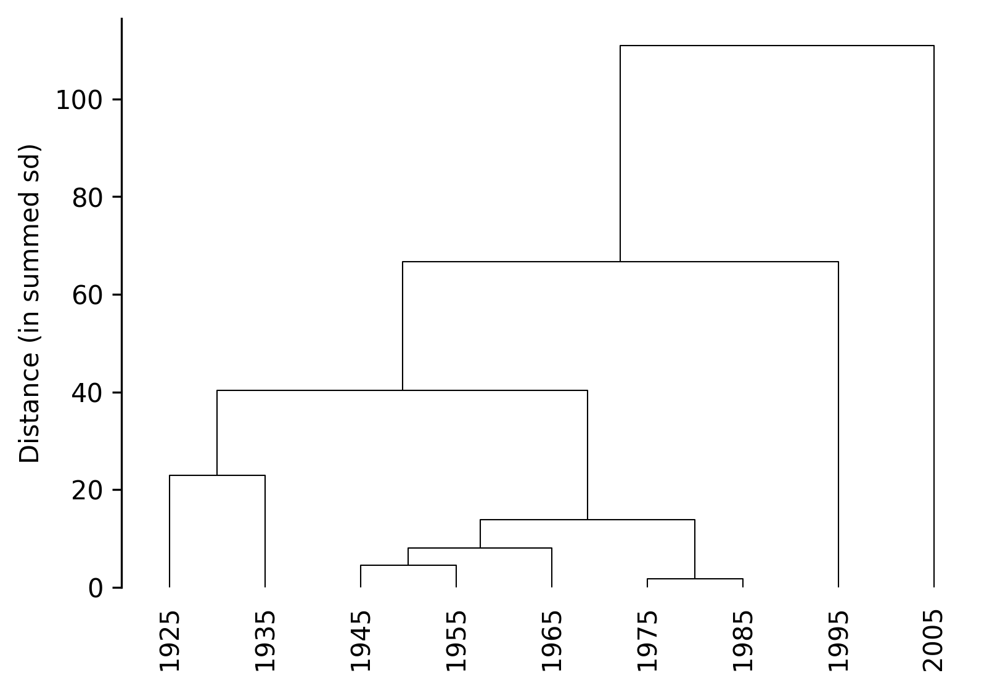
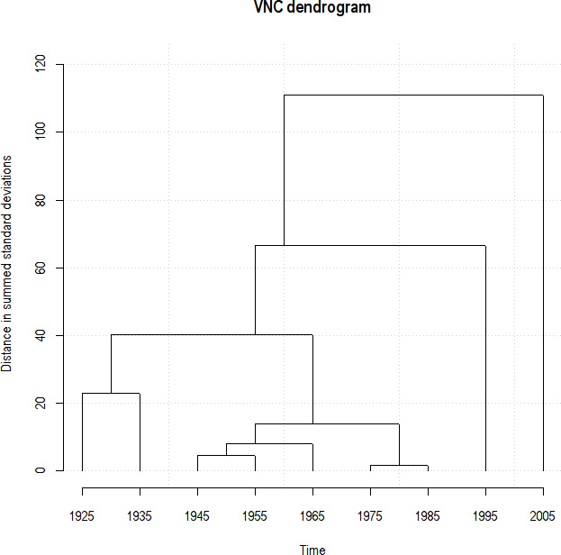
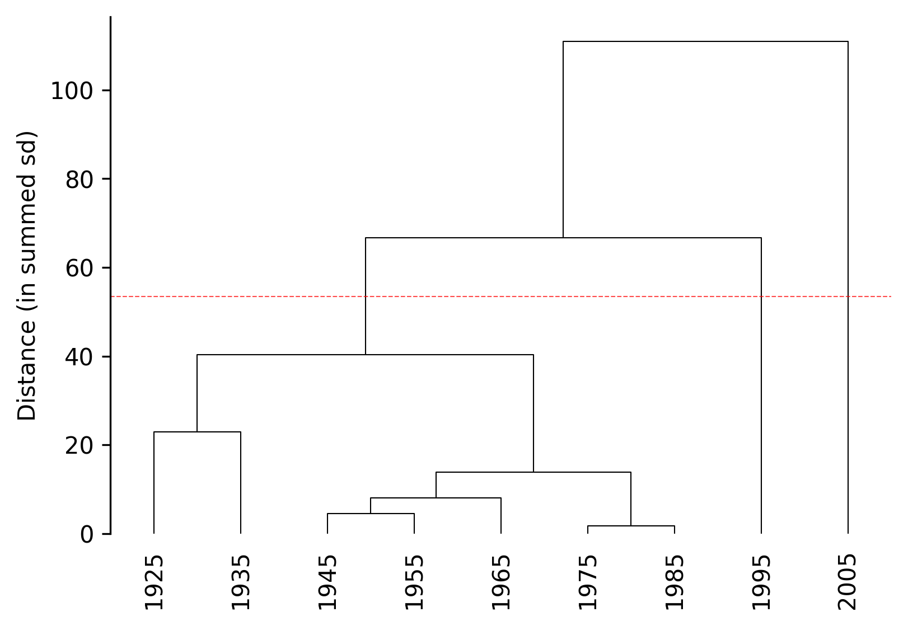
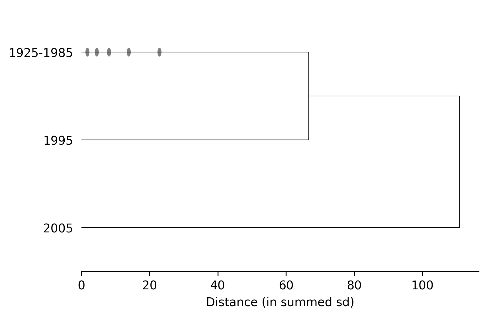
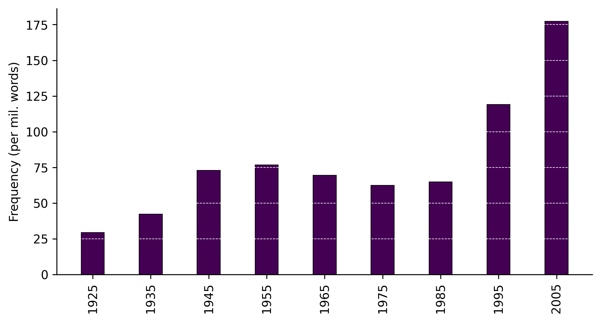
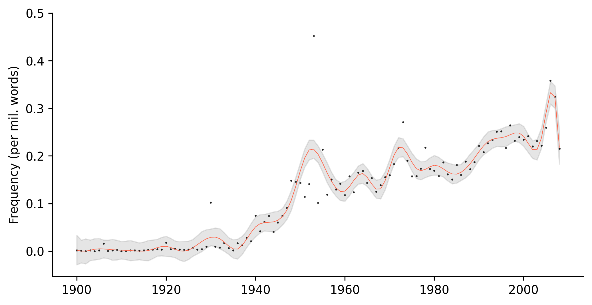
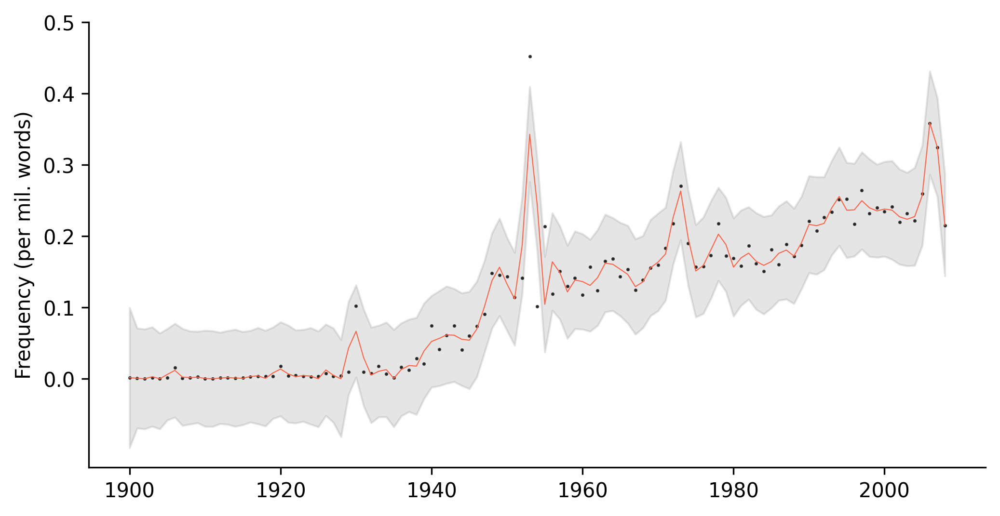
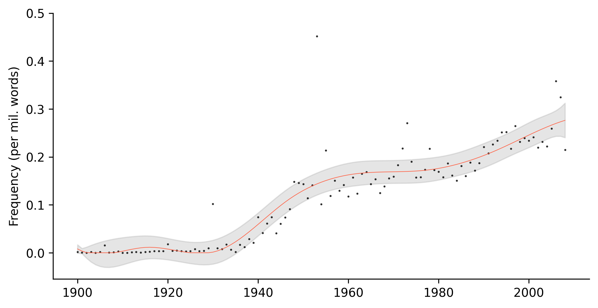
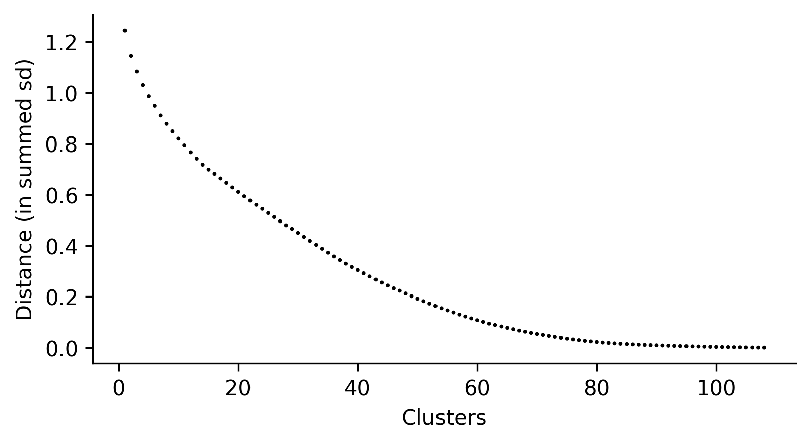

import polars as pl
from google_ngrams import TimeSeries, google_ngramTime series
The TimeSeries can be used for generating scatterplots with smoothed fits, bar plots and variablity-based neighbor clustering dendrograms.
One of defining features of VNC dendrograms is that they maintain leaf order, as their motivating purpose is to aid in periodization from “the ground up”. A second, and often overlooked, feature of the VNC method is the calculation of distances. Rather than conventional euclidean measures, distances are calculated according either summed standard deviations or summed coefficients of variation.
The timeviz_vnc function follows both criteria as established in Gries and Hilpert’s original R code.
Variability-based Neighbor Clustering
As a demonstration, we can replicate Gries and Hilpert’s demonstration plot.
Here is the data from their vignette:
input = [29.47368421, 42.20472441, 72.83870968, 76.72619048,
69.56521739, 62.42647059, 64.9122807, 118.9690722,
177.34375]
years = [1925, 1935, 1945, 1955, 1965, 1975, 1985,
1995, 2005]We can put that into a polars DataFrame:
df = pl.DataFrame({"Year": years, "RF": input})And instatiate the class:
Important
Be sure to identify the necessary column names: a time_col and a values_col.
TS = TimeSeries(time_series=df, time_col="Year", values_col="RF")Now, the dendrogram can be plotted.
TS.timeviz_vnc();
The output replicates the ouput produced in R:

In addition, n_periods can be specified to “cut” the dendrogram:
TS.timeviz_vnc(n_periods=3, cut_line=True);
The dendrogram can be also truncated like scipy dendrogram by setting periodize=True:
TS.timeviz_vnc(n_periods=3, periodize=True, orientation="vertical");
After setting n_periods (whether or not periodize is set to True), clustering information can be returned:
TS.cluster_summary()Cluster 1 (n=7): ['1925', '1935', '1945', '1955', '1965', '1975', '1985']
Cluster 2 (n=1): ['1995']
Cluster 3 (n=1): ['2005']Barplots
Simple barplots (most appropriately for by-decade data), can also be generated using timeviz_barplot.
TS.timeviz_barplot();
Note
Although this function is provided for convenience, it’s easy enough to create and customize your own plots from the data returned by the google_ngram function.
Scatterplots
Scatterplots with with a smoothed fit can be generated using timeviz_scatterplot. Because the fit is calcualted with a generalized additive model (GAM), scatterplots work best by by-year data. So for this, let’s generate some new data for lemmatized witch hunt starting in the 20th centur.
word_forms = ["witch hunt", "witch hunts"] # specify word forms
wh_frequencies = google_ngram(word_forms, by="year") # fetch word forms
wh_frequencies = wh_frequencies.filter(pl.col("Year") >= 1900) # filter out data prior to 20th century
TS = TimeSeries(wh_frequencies, time_col="Year", values_col="RF") # processes time series
Accessing repository. For larger ones
(e.g., ngrams containing 2 or more words).
This may take a few minutes...
Now we can plot the data:
TS.timeviz_scatterplot();
The amount of smoothing can be decreased by setting the smoothing value closer to 1:
TS.timeviz_scatterplot(smoothing=2);
Or increased up to 9:
TS.timeviz_scatterplot(smoothing=9);
Screeplots
Finally, screeplots can be generated to assist in determining the number of clusters in a dendrogram using timeviz_screeplot.
TS.timeviz_screeplot();
Again, this is a convenience function. Users can create their own screeplots by accessing the distance values directly:
distances = TS.distances_sd
distances.tolist()[::-1][:10] # top 10 in decreasing order[1.244287572278826,
1.1444209391091797,
1.0826165341117355,
1.0310263250066853,
0.9869468502531034,
0.9492413638317966,
0.9111552215483907,
0.8784015699144656,
0.8490944199888234,
0.8203264485087725]